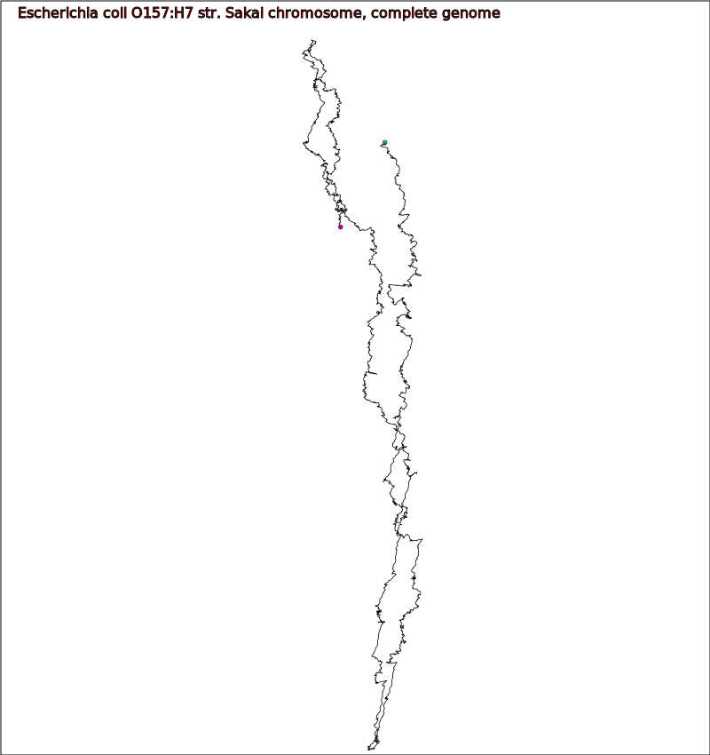

Webapp to generate and display genome walks
The purpose of this app is to generate and display DNA walks of bacterial genomes. DNA walks are simple graphical representations of DNA molecules. Each of the four nucletodies (A,C,G and T) found in DNA is assigned to a different vector in 2-dimensional space. The sequence of nucleotides is translated into a path of vectors forming a unique graphical representation of the molecule.
